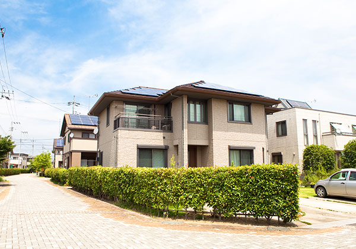
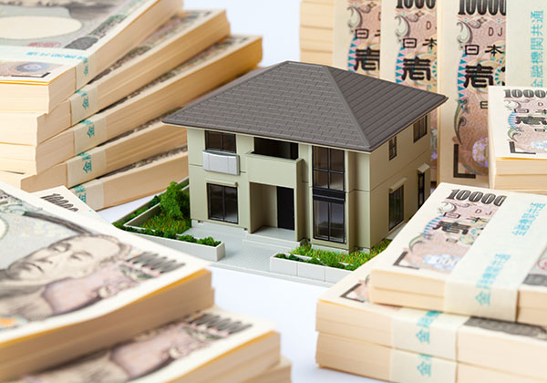
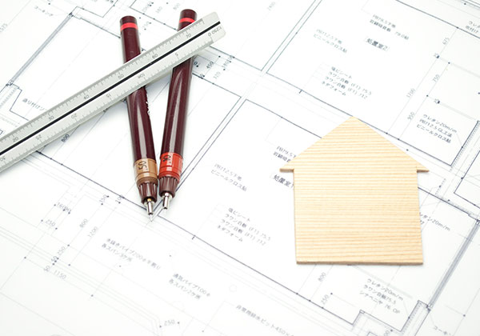
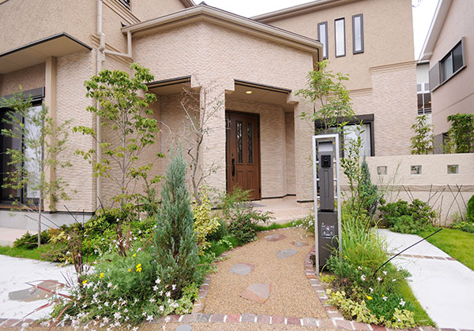
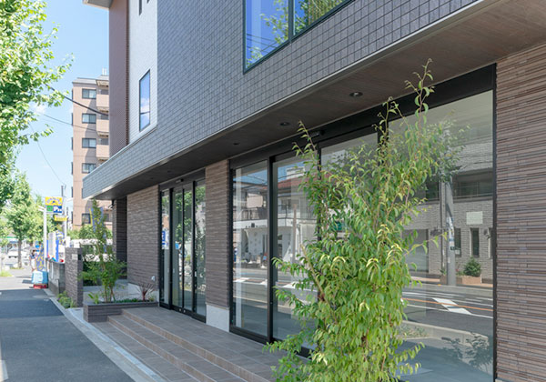
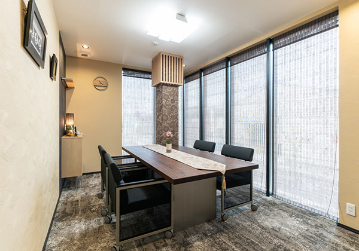

- HOME
- 早く売りたい -不動産買取-
早く手間をかけずに売るなら不動産買取ESTATE
住み替え先が決まっている、内見の対応が面倒などのご事情で早く売却したい方は、仲介より不動産買取をおすすめします。買主を探す時間や手間がかからず、ご希望の時期のお引渡しが可能です。埼玉県戸田市の英青リアルティはご事情によるスピード買取にも対応し、即日現金化の実績もございます。不動産買取はぜひ当社にお任せください。
こんなお悩みやご相談はございませんか？
こんなお悩みやご相談はございませんか？
- 既に住み替え先が決まっている
- 急に転勤が決まり、早く売却したい
- リフォームが必要だが、資金が足りない
- マンションの管理費の支払いが厳しい
- 購入希望者の内見対応をしたくない
- 売却することを近所に知られたくない
- 相続した不動産を現金化して分配したい
- 事業用物件の売却先を探している
不動産の買取について
不動産売却の一般的な方法は、不動産会社に売却を依頼する「仲介」です。不動産の価格査定をしてもらい、媒介契約を結んだ不動産会社がチラシやインターネットに広告を出すなど販売活動を行い、買主を探します。不動産会社が売主と買主を仲介し、売買契約を取りまとめます。
一方、「買取」は不動産会社に物件を直接買い取ってもらう売却方法です。不動産会社が買主となるため、売主は直接価格などの条件を交渉し、条件が折り合えばすぐに売却することができます。仲介の場合に必要な広告や購入希望者の内見などの販売活動を行う必要がありません。不動産買取は買主を探す手間がなく、早く現金化できる一方、売却価格は仲介より安くなることが多いです。

不動産買取のメリット
早く現金化し、即時買取も選べる
短期間で売却できるので早く現金化できるのが最大のメリットです。買取額に納得すればすぐに契約を行い、登記などの手続きを経て現金化まで待たずに済みます。すぐに現金化したいご事情がある場合は即時買取という方法があります。残債があったとしても、不動産会社が金融機関との折衝を行い、減免やローン担保の解除など必要な交渉を行うので、即時買取が可能です。

仲介手数料が不要
不動産会社の仲介で売却する場合は、報酬として仲介手数料を支払う必要があります。仲介手数料は法律で上限が決められていますが、売買価格が400万円以上なら、売買価格×3％+6万円（税別）の手数料がかかります。例えば3,000万円で売却した物件は（3,000万円×3％+6万円）×10％となり、105万6,000円の仲介手数料が必要です。一方、不動産買取の場合、仲介手数料は発生しません。不動産会社は物件を商品として仕入れ、販売することで利益を得られるためです。
瑕疵担保責任が免責される
「瑕疵」とは欠陥のことで、売却後に雨漏りやシロアリ被害などの欠陥が見つかった場合、瑕疵担保責任により売主は買主の修理や補修の請求に応じなければなりません。瑕疵の程度によっては契約を解除される可能性もあります。民法の瑕疵担保責任では買主が瑕疵を知ってから1年以内に申し出た場合となっていますが、不動産売買契約では売主の負担が大きくなるため、引渡しから数週間または3ヶ月以内とすることが多いです。ただ、買取であれば、買主が不動産業者のため、特別な例を除き、瑕疵担保責任は免責されます。売却後のアフターフォローや保証などを心配せずに済みます。

周囲に知られずに売却できる
不動産会社の仲介で売却する場合は、一般的にチラシのポスティングや週末に見学会を開催するなどの販売活動を行います。そのため近隣の方に売却することが知られる可能性が高いです。事前に要望すれば、見学会を開催しないなど販売活動を制限することはできますが、それだけ買主を見つけるのが難しくなります。買取であれば、不動産会社とやり取りするだけなので、周囲に知られることなくプライバシーに最大限配慮した売却が可能です。

- Pick Up！-買取保証-
-
買取には早く確実に売れるメリットがある一方で、仲介より買取価格が下がるというデメリットがあります。仲介は高く売れる可能性がある反面、いつ物件が売れるか分かりません。買取保証は買取と仲介のそれぞれのメリットを活かし、デメリットを補える方法です。
お客様のご希望の価格で販売活動を行い、契約期間内に売却できない場合は事前にお約束した価格で不動産会社が買い取ります。販売期間中に事情が変わり、急に資金が必要になったときは、買取に切り替えることも自由です。契約期間内に売買が成立した場合は仲介手数料がかかりますが、期間内に売買できず買取となった場合、仲介手数料は発生しません。計画的に高く売却したい、期限までに確実に売却したい方に最適な方法です。

- Pick Up！-「早く」より「高く」売りたい方は不動産仲介売却-
-
仲介は売却を依頼した不動産会社が販売活動を行い、購入希望者を探し、じっくり納得のいく金額で売却できる方法です。お客様の希望価格で売れる可能性はありますが、相場からかけ離れている場合は売却が難しくなります。その場合は協議の上売り出し価格を設定し、万一売れない場合は価格の見直しのタイミングも重要です。市場で人気がある物件は希望金額以上で売却できる可能性があり、住み替えの場合は契約が決まるまで住み続けることができます。当社の仲介サービスは居住用物件だけでなく、倉庫などの工業用地や社宅など中古の事業用物件、投資家のお客様向けにアパートなど事業用収益物件の仲介も可能です。仲介は売却期限に余裕があり、なるべく高く売りたい方に最適な方法です。
